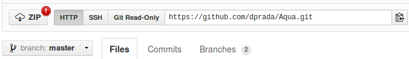

Welcome to the tentative Aqua’s documentation!
The whole project is public available at https://github.com/dprada/Aqua.git . There is not stable version yet, for this reason the use of these libraries it is under your responsability.
This version of Aqua is the seed of a future first stable version, and thereby the most robust configuration at the moment. All functions and attributes described on this documentation are available here.
The source code can be downloaded in the web page https://github.com/dprada/Aqua.git as a zip file:
However, clonning the project with git is a better way to get Aqua:
git clone -b master git://github.com/dprada/Aqua.git
The use of git is recommended since libraries can be easily updated. In this version new functions or corrections are updated almost weekly. Because of this, keeping an eye on the history of the project is highly recommended:
https://github.com/dprada/Aqua/commits/master
Todo
In the future the project will be included in easy_install or setup.py (http://packages.python.org/an_example_pypi_project/setuptools.html#registering-your-project)
Aqua depends on some packages:
Mac users:
After solving the dependencies, the Makefile needs to be executed to compile the fortran core of Aqua. This installation script has some variables which can be optionally fullfilled manually:
F2PY= # f2py command (f2py,f2py2,...)
FCOMP= # fortran compiler command (gfortran, ifort,...)
FTYPE= # fortran compiler for f2py (not manually given)
LAPACK_LIBS= # lapack libraries (-llapack, -lmkl_intel_lp64 -lmkl_sequential -lmkl_core -lmkl_def -lpthread, ...)
FOPTS= # options of the fortran compiler used (-fast, -checkall, ...)
FFLAGS= # additional fortran flags
If these variables are left in blank, they will be detected automatically. At this point, and in the directory of Aqua, the following command needs to be executed:
make
If the installation run without troubles, Aqua is ready to be used.
Warning
Do not forget to add Aqua to your python path: export PYTHONPATH=$PYTHONPATH:/path/to/Aqua
The last modifications of the developing version can be easily downloaded with git. The command ‘git pull’ executed over the Aqua directory checks and obtains the changes. Once this has been done, compiling the changed libraries is mandatory. Since the Makefile script detects the modified files, running it again is enough.
git pull
make
If at any moment the installation needs to be done from scratch, the following command removes the compiled files:
make clean